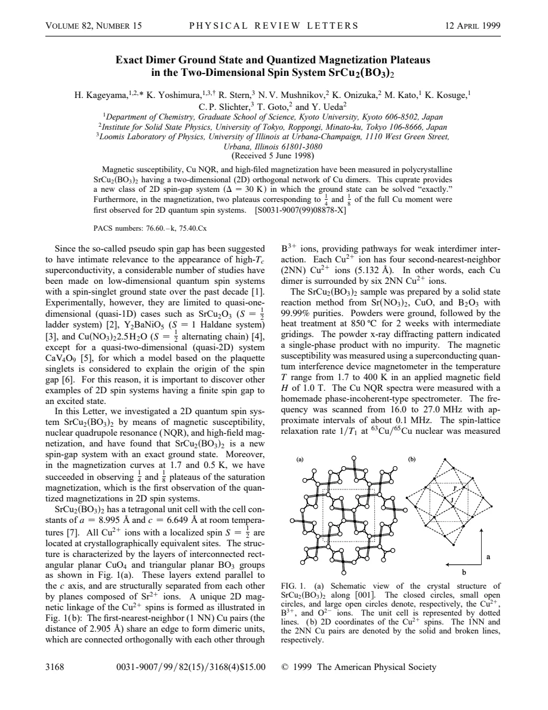
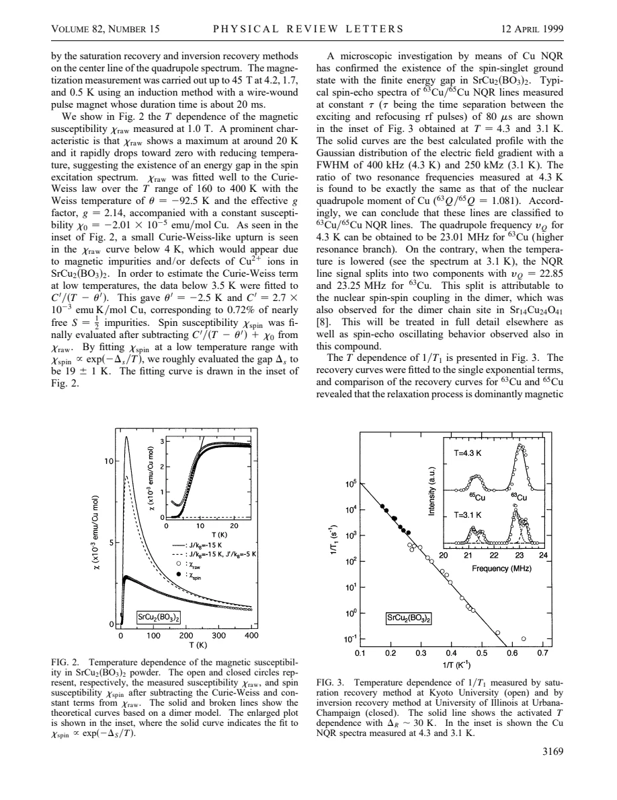
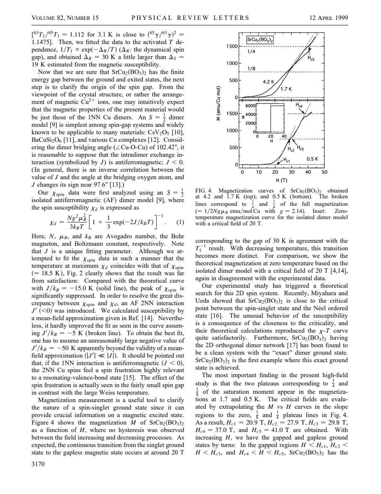

experiment · Kageyama · supplied source 1999
Exact Dimer Ground State and Quantized Magnetization Plateaus in the Two-Dimensional Spin System SrCu2(BO3)2
The supplied 1999 study identifies gapped singlet behavior and fractional magnetization plateaus in an interacting orthogonal-dimer network, beyond a model of independent dimers.
The question: Why does a two-dimensional dimer magnet show a spin gap and magnetization plateaus rather than the simple jump of isolated dimers?
Before you start: the few terms you need
- Dimer singlet: two spin-one-half ions combine to total spin zero
- Spin gap: finite energy to magnetic excitations
- Orthogonal dimers: neighboring strong-bond units have perpendicular orientations
- Plateau: magnetization remains nearly fixed across a field interval
See → explain → test
Understand it in four pictures.
Picture 1 / 4
Look beyond one dimer
Look for: Strong Cu pairs form an orthogonal network with interactions between dimers.
Swipe across the picture to read every label, or enlarge it below.
- Strong dimer bonds
- Interdimer network
- Orthogonal arrangement
Teaching finite patch of the orthogonal-dimer topology; boundary partners may lie off the patch. No refined coordinates or fitted exchanges.
An exact dimer-product ground state does not mean the excited states are independent dimers.
Picture 2 / 4
Compare two gap estimates
Look for: Susceptibility and NQR relaxation decrease on cooling but yield different approximate activation scales.
Swipe across the picture to read every label, or enlarge it below.
- Static χspin
- Dynamic 1/T1
Teaching probe comparison. Different observables and fitting ranges need not return one identical effective gap.
Static susceptibility gives about 19 K; relaxation gives about 30 K in the source analysis.
Picture 3 / 4
Raise the field
Look for: Magnetization turns on near 20 T and develops reported 1/8 and 1/4 features.
Swipe across the picture to read every label, or enlarge it below.
- Low-field singlet branch
- 1/8 plateau
- 1/4 plateau
Teaching ideal staircase: field positions and connecting slopes are arbitrary, no fitted critical fields or saturation branch. Powder data have rounded/sloping plateaus.
Fractional plateaus reveal collective excited-state physics beyond a single isolated dimer jump.
Picture 4 / 4
Test the simple model's failure
Look for: An isolated-dimer fit does not reproduce the suppressed susceptibility maximum or the gradual plateau structure.
Swipe across the picture to read every label, or enlarge it below.
- Isolated-dimer mismatch
- Orthogonal frustrated network
- Collective gapped phases
Theoretical interpretation linked to experiment; the paper cites supporting model work rather than deriving the exact ground state here.
The interaction network is essential even when singlets dominate the ground state.
Predict before revealing
An ideal model has an exact product of dimer singlets in its ground state. Must its field response be the same as independent dimers?
Choose an answer, then compare the reasoning.
The ground-state form and the excitation structure are different questions; the reported plateau response requires the interacting network.
Read the answer
No, interdimer interactions can organize triplet excitations and create fractional plateaus The ground-state form and the excitation structure are different questions; the reported plateau response requires the interacting network.
Go deeper Follow the full argument
The lattice distinguishes this magnet from a dimer chain
Kageyama and colleagues study polycrystalline SrCu2(BO3)2 using susceptibility, Cu NQR and pulsed-field magnetization. The Cu2+ ions carry spin one-half and form short pairs embedded in a two-dimensional orthogonal network. Neighboring pairs are connected through the surrounding borate geometry. This arrangement is associated with the Shastry-Sutherland model, which can support a product of singlets as an exact ground state in a suitable coupling regime. 'Exact' refers to a mathematical property of that ideal Hamiltonian, not perfect knowledge of every real-material interaction. The experimental paper identifies the material as a realization by comparing its structure and responses with cited theoretical work. Its main message is that a singlet ground state can coexist with strongly nontrivial collective excitations in two dimensions.
Subtract the small tail before reading the spin response
The raw susceptibility reaches a broad maximum around 20 K and falls rapidly on cooling, suggesting a gap. A small low-temperature Curie-Weiss upturn is treated as a nearly free defect contribution, corresponding to roughly 0.72% spin-one-half impurities in the fit. A constant background is also subtracted to obtain the spin susceptibility. The resulting low-temperature activation estimate is about 19 ± 1 K. Fitting the full response with isolated antiferromagnetic dimers fails: the model's maximum is much too large. Adding a weak interdimer interaction through a simple mean-field correction does not repair the discrepancy unless an implausibly large correction is used outside the approximation's regime. This failure is useful evidence that the network cannot be reduced to independently responding pairs with a small cosmetic adjustment.
NQR confirms dynamics with its own effective gap
Cu NQR provides a microscopic relaxation test. The isotope frequency ratio identifies the observed lines as quadrupolar Cu resonances; the relaxation isotope comparison supports a predominantly magnetic mechanism. The low-temperature 1/T1 decreases approximately as an activated function, yielding a dynamical scale around 30 K. This is larger than the rough susceptibility estimate, and both numbers should remain visible rather than silently averaged. The source also attributes a low-temperature line splitting to nuclear spin-spin coupling within dimers, not to the onset of a static electronic Néel state. That distinction matters whenever split resonances are used as evidence for magnetism. Different probes weight different excitations and rely on different fits, so agreement in the existence of a gap need not mean numerical equality of their effective activation scales.
The field reveals what the excited states are doing
Pulsed-field measurements reach 45 T at temperatures down to 0.5 K. Magnetization starts increasing around 20 T, consistent with a Zeeman energy comparable to the NQR activation scale. Unlike the abrupt zero-temperature jump of isolated dimers, the measured magnetization changes gradually and contains fractional features near one-eighth and one-quarter of the saturation moment. The source associates plateau intervals with gapped magnetic phases and intervening rising regions with gapless response. Its reported powder plateaus are not perfectly flat: thermal effects and averaging over direction-dependent g factors smear the transitions. The normalized fraction is more meaningful than treating a rounded shoulder as a perfectly horizontal line. The teaching staircase therefore shows only ideal fractions and arbitrary field positions; the actual critical fields belong to the original figure and sample conditions.
Ground-state simplicity does not imply spectral simplicity
The authors discuss theoretical work that attributes the unusual susceptibility to proximity to a competing ordered state and the plateaus to almost localized triplet excitations in the orthogonal network. Those ideas connect the observed collective response to frustration and interacting dimers. The paper mentions a one-dimensional quantization condition as context, but does not establish that condition as a complete derivation for this two-dimensional material. It also lists predicted additional plateaus that were not demonstrated in these measurements. Later work can refine those assignments; this lesson preserves the supplied 1999 claim rather than importing a modern phase diagram. The durable lesson is to distinguish an exact ideal ground-state wavefunction, an approximate material Hamiltonian and experimental evidence about its excited states. Interdimer interactions matter to the latter even when the first has a simple singlet-product form.
Translate the mathematics Key equations and symbol meanings
χspin ∝ exp(−ΔS/T); 1/T1 ∝ exp(−ΔR/T)
Symbols: ΔS ≈ 19 K: susceptibility activation estimate; ΔR ≈ 30 K: relaxation activation estimate; T: temperature in K.
These are approximate source fits to different observables, not a claim of two exactly measured fundamental gaps.
g μB Hc ≈ kB ΔR
Symbols: g: effective g factor; μB: Bohr magneton; Hc: onset field around 20 T; kBΔR: gap energy.
A teaching Zeeman-energy comparison explains why a sufficiently strong field can populate magnetic excitations; the interacting network then determines the plateau structure.
M / Msat ≈ 1/8 and 1/4; Msat = (1/2) N g μB per mole Cu
Symbols: M: molar magnetization; N: Avogadro number; g: source uses about 2.14; Msat: full spin-one-half Cu moment.
The fractional plateau features are collective observations, not the magnetization response of a single isolated pair.
Read the evidence A guided look at the original figures

Open the full original page ↗

Open the full original page ↗

Open the full original page ↗
What this paper does—and does not—establish
- Historical 1999 polycrystalline experiment; additional plateaus discussed in the paper are predictions, not measured results here.
- The ideal model's exact dimer ground state is distinct from a complete real-material Hamiltonian.
- The source uses a negative-J AF convention in its isolated-dimer susceptibility expression; comparisons to source 43 require translating conventions.
- Teaching magnetization staircase has arbitrary field positions and no experimental points.
Explain it back.
Try answering aloud before opening the explanation.
Why retain both 19 K and 30 K?
They are different approximate activation estimates from static susceptibility and dynamic NQR relaxation.
Why are the observed plateaus not exactly flat?
Thermal smearing and powder averaging of anisotropic critical fields contribute.
Does 'exact ground state' mean the experimental Hamiltonian is known exactly?
No. Exactness belongs to a particular ideal model and coupling regime.
Connect the next paper.
Source version, reading coverage and preservation
All four pages read in extracted text; rendered crystal topology, relaxation and magnetization figures on pages 1–3 checked.
Reviewed body pages: 1, 2, 3, 4. Cited theoretical proofs and later phase-diagram studies not independently reviewed.
Original file retained byte for byte. SHA-256: 7156b098ac1b1ee3c4acbda4307cd51e90b45f6c7f878c575adea92a9d35444f
Filename: PRL - Kageyama - Dimer ground state and magnetization plateaus in SrCu2(BO3)2 - 1999.pdf.